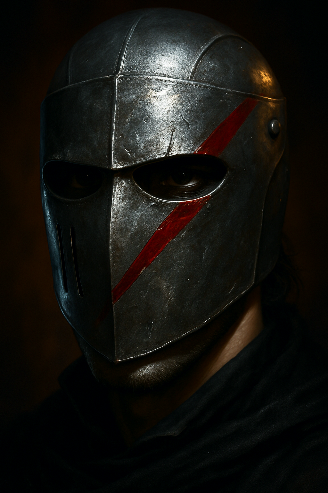

Thomas Wyndham
Captain Thomas Wyndham
Age: 27
Profession: British Army Officer (Light Dragoons)
Appearance: Tall and lean, with a chiseled jaw and fair hair tied back in a neat queue. His scarlet uniform is immaculate. He carries himself with polished ease, though his eyes betray the weight of the Peninsular War.
Manner: Cordial and proper, yet with a quiet, haunted intensity—his battlefield past always near the surface.
Attributes
| Stat | Value |
| STR (Strength) | 70 |
| CON (Constitution) | 65 |
| SIZ (Size) | 60 |
| DEX (Dexterity) | 60 |
| APP (Appearance) | 80 |
| INT (Intelligence) | 65 |
| POW (Willpower) | 60 |
| EDU (Education) | 55 |
| SAN (Sanity) | 60 |
| LUCK | 46 |
| HP | 12 |
| MP | 12 |
Combat Skills
| Skill | Base | Skill | Notes |
| Fighting (Brawl) | 25% | 65% | Officer’s training in hand-to-hand |
| Firearms (Handgun) | 20% | 40% | Carries a pistol |
| Firearms (Rifle/Musket) | 25% | 50% | Trained in musketry |
| Sword (Sabre) | — | 70% | Skilled cavalry sabre user |
| Dodge | DEX × 2 | 40% | Can be higher when not in uniform |
Weapons
| Weapon | Skill | Damage | Range | Attacks | Ammo | Malf |
| Sabre (Cavalry) | 70% | 1D8+1 + DB | — | 1 | — | — |
| Flintlock Pistol | 40% | 1D10 | 15 yds | 1/3 | 1 | 100 |
| Fist (Brawl) | 65% | 1D3 + DB | — | 1 | — | — |
Damage Bonus (DB): +1D4
Investigative & Social Skills
| Skill | Score | Notes |
| Charm | 60% | Polite & romantic demeanor |
| Credit Rating | 55% | Officer’s income and reputation |
| Intimidate | 40% | Authority & military bearing |
| Persuade | 50% | Well-spoken |
| Ride (Horse) | 70% | Expert |
| Spot Hidden | 50% | Trained in awareness |
| First Aid | 30% | Battlefield knowledge |
| History (Military) | 40% | Campaigns & battle lore |
| Language (French) | 40% | Enough to operate in France |
Traits & Notes
- Reputation: Distinguished service at Talavera and Salamanca. Rumored to have led a doomed cavalry charge and survived alone.
- Romantic Interest: May court Emma_Wentworth or Marina Garrick, depending on how the narrative unfolds.
- Wound: Carries an old musket ball in his shoulder. Occasionally causes pain in damp weather.
- Sanity Risk: Haunted by something he saw in the ruins near Burgos—a thing in the fog his mind rejects. This could later emerge as a Mythos tie.
Optional Keeper Hooks
- Dreams: Has begun to hear singing in his dreams since arriving in France.
- Loyalty: Can become an ally of the Order_of_St_Aelfric if recruited, particularly if convinced of the truth.
- Bloodline Twist: Is secretly descended from a line touched by the Mythos—perhaps unknowingly part of a bloodline that once worshipped Yog-Sothoth.
Background
Thomas Wyndham is a British infantry officer from London. He is NOT from Vienna and has no family residence in the city — he is a military officer stationed there.
Current Status (Vienna, August 1814)
Thomas is a Keeper NPC controlled by the Keeper. He is intensely devoted to Emma_Wentworth and has taken on a protective role.
Key Moments
- Session 6 (Nightgaunt Attack): Maintained an armed vigil outside Emma’s room after the creature’s attack on Palais Kinsky
- Identified Brotherhood Watchers: Recognized and reported three Brotherhood agents watching the party at Palais Kinsky
- Emotional Entanglement: His protective devotion to Emma is becoming problematic for party operations
The Sternberg Rivalry
Thomas is increasingly volatile due to Graf_Sternberg’s formal romantic pursuit of Emma. Sternberg’s advances and social status are pushing Thomas toward issuing a formal duel challenge — a potential complication that could:
- Divide party attention during critical operations
- Remove Thomas from the field for extended periods
- Create diplomatic incidents (British officer vs. Austrian nobility)
- Force the party to choose sides or intervene
See Sternberg_Duel_Subplot for full subplot structure.
Character Notes for Keeper
Thomas is:
- Loyal: Deeply committed to the party and especially to Emma
- Volatile: Quick to anger when Emma is threatened or pursued by rivals
- Protective: Acts without hesitation to guard those he cares for
- Somewhat Hot-Headed: May escalate situations through direct confrontation rather than diplomacy
His protective instinct could become either an asset (willing to take risks for the party) or a liability (emotional decisions, time away from investigations for duels).
[!warning] Keeper Note Thomas is a Keeper NPC, not controlled by players. His actions reflect his emotional state and loyalties, not player decisions. If the party attempts to talk him down from the duel, the outcome depends on their approach — there is no guaranteed success path.
Masquerade

Session 8 Update — Grand Masquerade (Night of August 8, 1814)
Thomas attended the Grand Masquerade with the party. Two events define his Session 8:
The Sternberg Challenge — Accepted
When Graf Maximilian von Sternberg arrived drunk and demanded a dance from Emma, then loudly insulted Varrio for refusing on her behalf, Varrio answered with a closed fist to Sternberg’s mouth in front of perhaps a hundred witnesses. Sternberg recovered, drew himself up, and issued a formal duel challenge — “Tomorrow at dawn, outside the Linienwall gates. Sabres.”
Wyndham accepted the challenge on Varrio’s behalf, with delight. He then asked Varrio to second him. The duel is set for dawn, August 9, sabres, outside the Linienwall gates. (See Sternberg_Duel_Subplot for the full subplot history; this is the moment the long-running rivalry collapses into actual blade work.)
This is Wyndham unfiltered — the protective devotion he has been holding back through six sessions has finally found a target who is socially permissible to fight. His “delight” at accepting is canon: he wants this.
The Wächter Attack — Bulwark of the Corridor Cluster
When the first Wächter dropped through the stained-glass window and the ballroom collapsed into panic, Wyndham positioned himself as the physical bulwark of the corridor cluster — shoving through the panicking crowd to clear a path for Emma and the freshly-extracted Anna toward the servants’ corridor exit. He is a trained sabre-wielding cavalry officer in a room where most of the men present are in evening dress and most of the women are in heels; the corridor cluster’s survival depends substantially on his ability to keep the crowd off them.
Current State (top of Session 9)
- Physically: Alive, uninjured, sabre at his hip (worn as part of his uniform, drawn now)
- Tactically: At the entrance to the servants’ corridor with Emma, Anna, and Nell. Wächter ahead, panicking aristocracy behind. He is the most capable combatant in the cluster.
- Emotionally: Riding two parallel highs — the Sternberg challenge accepted and the chance to actually do something protective for Emma in front of a literal monster. The Keeper’s read: Wyndham is in the most coherent and dangerous state of his Vienna arc to date.
- Tomorrow morning: Has a sabre duel at dawn. The events of tonight may or may not change his appetite for it.
Open Questions for Session 9
- Does the duel still happen at dawn? The masquerade has produced public deaths, an inhuman creature, and a fugitive cult lieutenant. Vienna may not be in a state where a private dawn duel goes ahead as planned. Sternberg is also a witness to the Wächter and may be in no condition to fight. Wyndham himself may decide the duel is beneath him after what he has just seen — or he may decide it is more important than ever as a matter of honour.
- Does he leave the cluster to engage the Wächter directly? Wyndham is the one PC in the corridor cluster with the training and weapon to actually wound the creature. He may charge it. He may also recognise that holding the line is the correct tactical choice and refuse to be drawn out.
- Does he live through the night? Wächter combat in Round 3+ is lethal, and Wyndham is the most likely PC to put himself between the creature and the people he loves.
[!info] Keeper Only Wyndham is the highest-mortality PC at the top of Session 9 by a clear margin. He has the temperament, the position, and the equipment to engage the Wächter directly, and his emotional state pushes hard toward heroic action. If the player chooses to charge the creature, the Keeper should not soften the consequences — Wyndham’s death (or grievous injury) at the masquerade is the kind of loss that would reshape the rest of the Vienna chapter, particularly Emma’s arc and the duel subplot. Equally, if Wyndham survives the night intact, the dawn duel becomes the next pressure point — and may be the moment that breaks Sternberg from rival into ally, depending on how the evening’s revelations land on him.
Session 9 Update — Survived the Night (Night of 8 August into Dawn of 9 August 1814)
Thomas survived. He leapt from the broken ballroom window onto the port-cochère roof in a crouch and turned to help others — but Fräulein Lindqvist jumped too hard and sailed past him at an angle. He lunged, caught her by the arm and dress, and ended up flattened on the roof with the singer dangling above a ten-foot drop to the Spiegelgasse below. He pulled her to safety. In the alleyway, he pushed Anna behind him and raised a stone to defend her before the Wächter was recalled by Adler’s tuning fork. He was picked up with Anna during the carriage flight.
At Thaliastraße 12, Thomas refused to leave Emma’s side. She sustained a major knife wound under the arm from Adler during the fork scramble. Thomas is at her bedside and will not move until a doctor arrives.
Current Status (dawn, 9 August 1814)
- Physically: Alive, uninjured
- Location: At Emma’s bedside in the parlour bedroom at Thaliastraße 12
- Emotionally: Devoted. The jump-and-catch on the port-cochère and the bedside vigil are defining moments.
- The duel: Sternberg vs Thomas was scheduled for dawn on 9 August at the Linienwall gates. It is now dawn. Thomas is in the safehouse, not at the gates. Whether the duel runs, is deferred, or is abandoned is a Session 10 Phase 1 question.
Session 11 Update — The Duel Won (Dawn, 10 August 1814)
The duel was rescheduled in Session 10 (Varrio charmed Sternberg over Tokaji) to dawn on 10 August, pistols, Linienwallgasse. Thomas appeared. Sternberg appeared. The duel was fought.
- Pistol exchange: Thomas missed. Sternberg’s pistol misfired (wet pan, damp morning conditions). Neither man hit.
- Weapon switch: Varrio persuaded both seconds to switch to sabers (Hard Charm success).
- Sabre exchange: Both men at Fighting (Sword) 70%. Thomas anticipated Sternberg’s riposte, twisted under the blade, drove saber into armpit and chest. Collapsed lung. Sternberg hospitalized.
- The kiss: Thomas kissed Emma on the duelling ground. She kissed him back. Four sessions of romantic tension resolved in a single gesture.
Current Status (morning, 10 August 1814)
- Physically: Alive, uninjured. Combat-ready.
- Honour: Restored. An English officer who outfought an Austrian Hussar at dawn.
- Romance: Resolved. Thomas and Emma are together.
- The duel subplot is closed. Sternberg is hospitalized and out of the narrative.
- Available for the University assault. Sabre 70%, Firearms (Handgun) 40%, HP 12. Motivated, resolved, and no longer distracted by romantic rivalry.
[!info] Keeper Only Thomas is in the most coherent state of his entire Vienna arc. The duel has purged the volatility that has defined him since Session 4. He fought for Emma’s honour, he won, and she chose him openly on the field. He is now free to channel his military capability toward the University assault without the emotional static of the Sternberg rivalry. This makes him the party’s most reliable NPC combat asset for the finale.
Session 11 Update — Full Record (9–10 August 1814)
The earlier Session 11 update covered the duel only. The full session record:
The Duel (Dawn, 10 August): Fought at Linienwallgasse, beyond the Linienwall gates. Pistol exchange: Thomas missed, Sternberg’s pistol suffered a wet pan misfire (not a critical failure roll — the powder failed to catch in the damp morning air). Varrio persuaded both seconds to switch to sabers. Thomas anticipated Sternberg’s riposte, twisted under the blade, and drove his saber into Sternberg’s armpit and deep into his chest. Collapsed lung. Sternberg was loaded into a carriage and driven to hospital. Thomas kissed Emma on the duelling ground. She kissed him back.
The Black Bear Raid (Evening, 10 August): Thomas joined Freddy and Adrien to raid the Black Bear on Taborstraße. Thomas kicked the door in. During the fight, Werner grabbed Thomas’s foot and yanked him off his feet. Thomas recovered and killed Klaus — ran him through with his saber when Klaus staggered up from the cot with a knife.
Safehouse Celebration: Thomas returned to Thaliastraße 12 and regaled Adrien and Freddy with a blow-by-blow account of his duel victory. In high spirits, combat-ready, and fully resolved.
Corrections to Earlier Update
- Duel location: Linienwallgasse, beyond the Linienwall gates
- Sternberg’s misfire: Wet pan (damp conditions), not a critical failure (roll of 100)
- Sternberg’s wound: Armpit and chest (collapsed lung), not “shoulder to ribs” or “guard to ribs”
Session 13 Update — Wächter Aftermath; University Assault (Evening 11 August into Pre-dawn 12 August 1814)
After the Wächter Attack
When the Wächter at the Heuriger was killed and the fire extinguished, Thomas helped Emma out from under the table where she had taken cover. He settled her on the parlour sofa with her feet in his lap — a quiet, instinctive act of care in the aftermath of violence.
University Assault — Main Team
Thomas is on the main assault team entering Herzfeld’s side of the University. During the approach, when the team encountered student guards outside Herzfeld’s office, Thomas charged in and knocked one unconscious with a single punch. No hesitation, no wasted motion.
Current Status (pre-dawn, 12 August 1814)
- Location: University, main team, Herzfeld’s office wing
- Status: Alive, uninjured, operational
- Emotional state: Focused and resolved — the purest version of his Vienna arc, free of the Sternberg static, protecting the people he loves by breaking down doors
Relationships
- Knows Emma Wentworth — In love with Emma; maintained armed vigil after Nightgaunt attack
- Rival of Graf Sternberg — Romantic rivalry; Sternberg's pursuit pushing Thomas toward duel challenge
- Located at Sternberg Duel Subplot — Central figure in romantic rivalry subplot
- Knows Adrien de Montferrand — Party member, resident of Palais Kinsky
- Knows Freddy Cavendish — Fellow British gentleman in Vienna